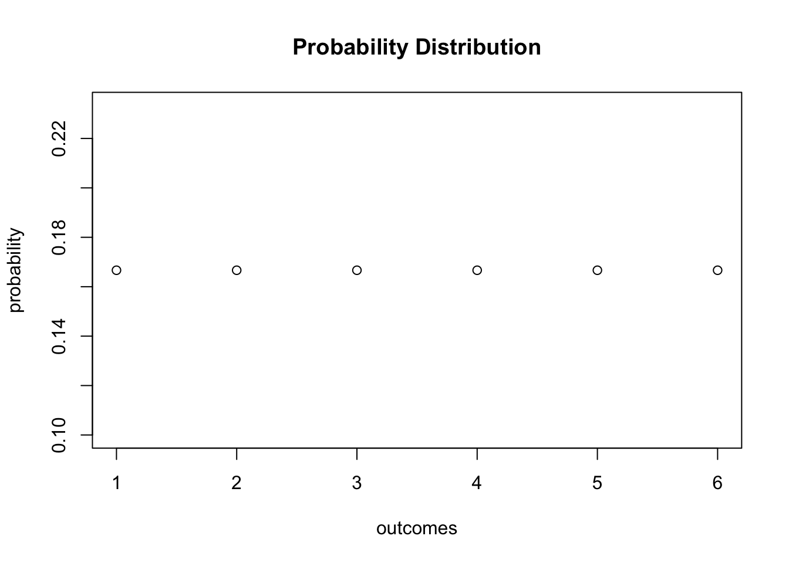
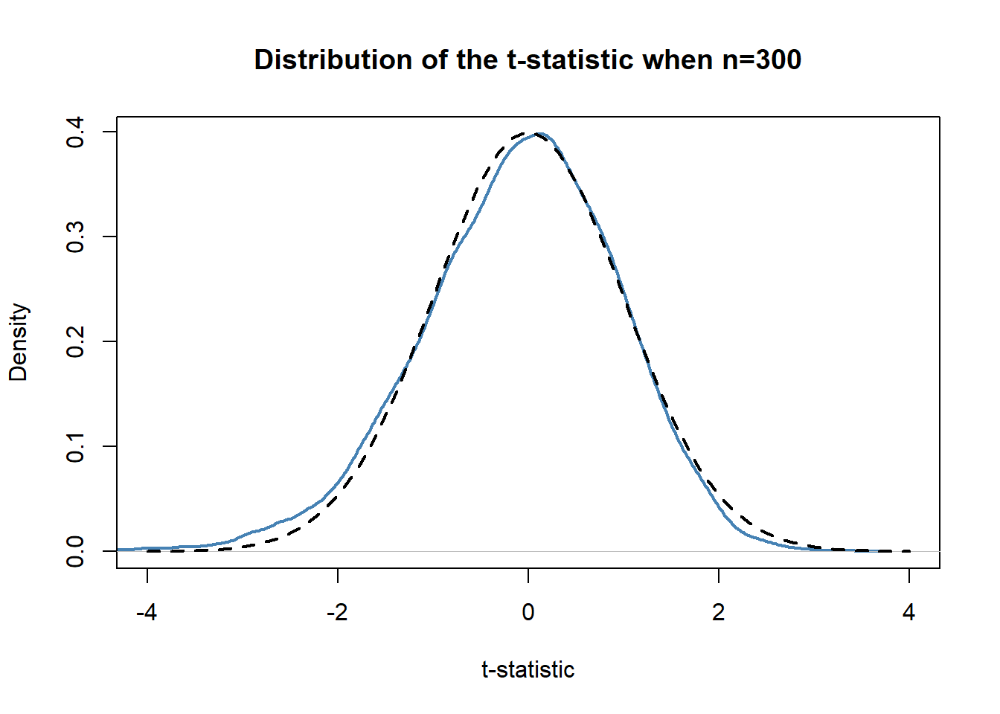
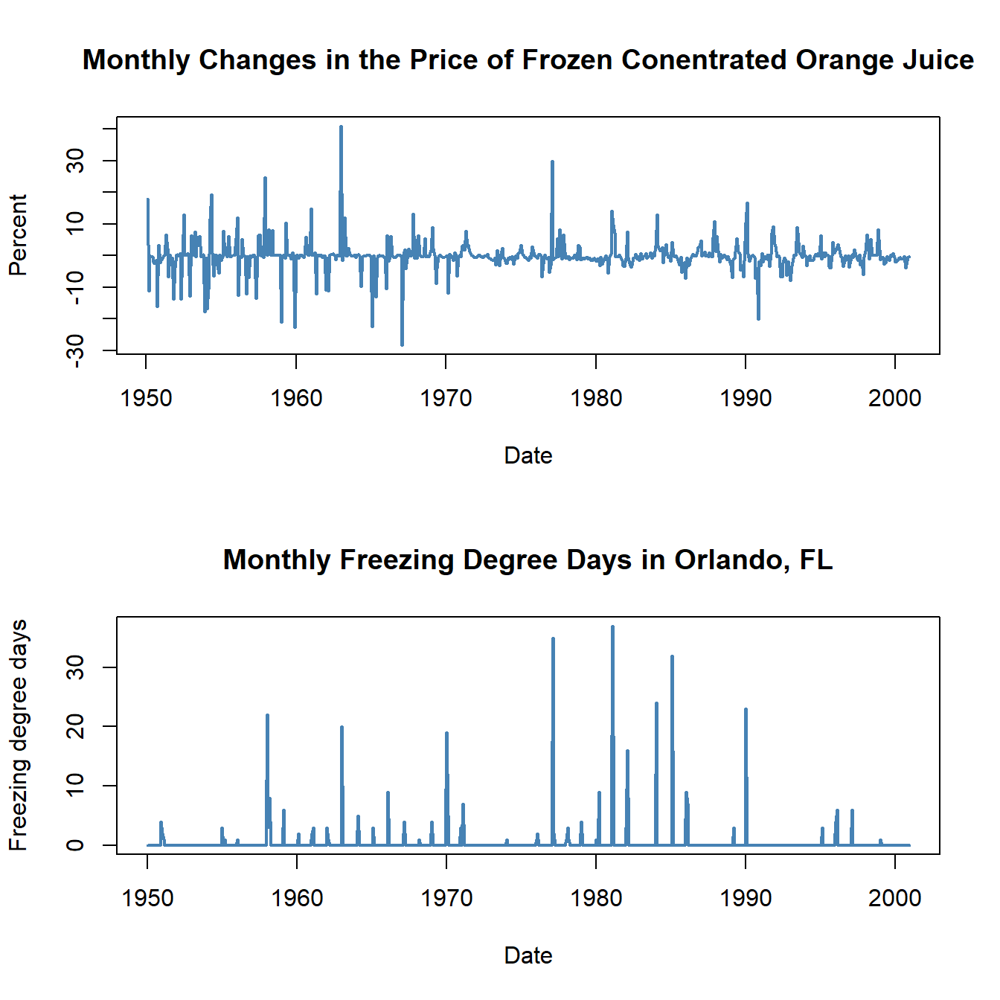

8 Nonlinear Regression Functions
Until now we assumed the regression function to be linear, i.e. we have treated the slope of the regression function as a constant. This implies that the effect on \(Y\) of a one unit change in \(X\) does not depend on the level of \(X\). If however the effect of a change in \(X\) on \(Y\) does depend on the value of \(X\), we have to use a nonlinear regression function.
Let us have a look at an example where using a nonlinear regression function might be better suited to describe the relationship between \(X\) and \(Y\): the relation between district income and test scores.
#Preparing the data
library(AER)
data(CASchools)
CASchools$size <- CASchools$students/CASchools$teachers
CASchools$score <- (CASchools$read + CASchools$math)/2 We start our analysis by computing the correlation between the two variables.
cor(CASchools$income, CASchools$score)## [1] 0.7124308The correlation coefficient is about \(0.71\). This means that income and test scores are positively correlated. In other words, children whose parents have an above average income tend to achieve above average test scores. Can we use the correlation coefficient to assess whether a linear regression model does fit the data adequately? To answer this question we visualize the data and add a linear regression line to the plot.
#Fit linear model
linear_model<- lm(score ~ income, data = CASchools)
# Plot observations
plot(CASchools$income, CASchools$score,
col = "steelblue",
pch = 20,
xlab = "District Income (thousands of dollars)",
ylab = "Test Score",
main = "Test Score vs. District Income and a Linear OLS Regression Function")
# Add the regression line to the plot
abline(linear_model, col="red", lwd=2)
As Stock and Watson point out, the linear regression line seems to overestimate the true relationship when income is very high or very low and underestimates it in the midrange.
Fortunately, usage of the OLS is not restricted to linear functions of the regressors. Thus we can for example model test scores as a function of income and the square of income. The corresponding regression model is
\[TestScore_i = \beta_0 + \beta_1 Income_i + \beta_2 Income_i^2 + u_i.\]
This equation is called the quadratic regression model. Note, that \(Income^2\) is treated as an additional explanatory variable. Hence, the quadratic model is a special case of a multivariate regression model. When fitting the model with lm() we have to use the ^ operator in conjunction with the function I() to add the quadratic term as an additional regressor to the formula argument.
# Fit the quadratic Model
quadratic_model <- lm(score ~ income + I(income^2), data = CASchools)
# Generate model summary
summary(quadratic_model)##
## Call:
## lm(formula = score ~ income + I(income^2), data = CASchools)
##
## Residuals:
## Min 1Q Median 3Q Max
## -44.416 -9.048 0.440 8.347 31.639
##
## Coefficients:
## Estimate Std. Error t value Pr(>|t|)
## (Intercept) 607.30174 3.04622 199.362 < 2e-16 ***
## income 3.85099 0.30426 12.657 < 2e-16 ***
## I(income^2) -0.04231 0.00626 -6.758 4.71e-11 ***
## ---
## Signif. codes: 0 '***' 0.001 '**' 0.01 '*' 0.05 '.' 0.1 ' ' 1
##
## Residual standard error: 12.72 on 417 degrees of freedom
## Multiple R-squared: 0.5562, Adjusted R-squared: 0.554
## F-statistic: 261.3 on 2 and 417 DF, p-value: < 2.2e-16The output tells us that the estimated model equation is
\[ \widehat{TestScore}_i = \underset{(3.05)}{607.3} + \underset{(0.30)}{3.85} \times Income_i - \underset{(0.01)}{0.0423} \times Income_i^2. \]
Notice that this estimated model equation allows us to test the hypothesis that the relationship between test scores and district income is linear against the alternative hypothesis that it is nonlinear. This corresponds to testing
\[ H_0: \beta_2 = 0 \ \ \text{vs.} \ \ H_1: \beta_2\neq0,\]
since \(\beta_2=0\) corresponds to a simple linear equation and and \(\beta_2\neq0\) implies a quadratic relationship. We find that \(t=(\hat\beta_2 - 0)/SE(\hat\beta_2) = -0.0423/0.01 = -4.23\) so the null is rejected at any common level of significance and we conclude that the relationship is nonlinear. This is consistent with our informal inspection of the plotted data.
We can now draw the same scatterplot as for the linear model and add the regression line for the quadratic model. Because abline() can only draw straight lines, it cannot be used for this task. A function which can be used to draw lines without being restricted to straight lines is lines(), see ?lines. The most basic call of lines() is lines(x_values, y_values) where x_values and y_values are vectors of the same length that provide coordinates of the points to be order() to sort the fitted values of \(TestScore\) according to the observations for \(income\).
# Scatterplot of observatuib for income and TestScore
plot(CASchools$income, CASchools$score,
col = "steelblue",
pch = 20,
xlab = "District Income (thousands of dollars)",
ylab = "Test Score",
main = "Linear and Quadratic OLS Regression Functions")
#Add linear function to the plot
abline(linear_model , col="black", lwd=2)
#Add quatratic function to the plot
order_id <- order(CASchools$income)
lines(x = CASchools$income[order_id],
y = fitted(quadratic_model)[order_id],
col="red",
lwd=2) 
We see that the quadratic model does much better in fitting the data than the linear model.
The approach we used to obtain a quadratic model can be generalized to polynomial models of arbitrary order \(r\). \[Y_i = \beta_0 + \beta_1 X_i + \beta_2 X_i^2 + \ldots + \beta_r X_i^r + u_i\]
A cubic model (\(r=3\)) for instance can be estimated in the same way as the quadratic model — we just have to add I(income^3) to the formula argument in our call of lm().
cubic_model <- lm(score ~ income + I(income^2) + I(income^3), data = CASchools)In practice the question will arise which polynomial order should be chosen. First note that, similarly as for \(r=2\), we can test the null hypothesis that the true relation is linear against the alternative hypothesis that the relationship is a polynomial of degree \(r\):
\[ H_0: \beta_2=0, \ \beta_3=0,\dots,\beta_r=0 \ \ \ \text{vs.} \ \ \ H_1: \text{at least one} \ \beta_j\neq0, \ j=2,\dots,r \]
This is a joint null hypothesis with \(r-1\) restrictions so it can be tested using the \(F\)-test presented in chapter 7. Remember that the function linearHypothesis() can compute such test statistics. If, for example, we would like to test the null hypothesis of a linear model against the alternative of a polynomial of a maximal degree \(r=3\) we could simply do the following:
library(car)
# test the hypothesis
linearHypothesis(cubic_model,
c("I(income^2)=0", "I(income^3)=0")
)## Linear hypothesis test
##
## Hypothesis:
## I(income^2) = 0
## I(income^3) = 0
##
## Model 1: restricted model
## Model 2: score ~ income + I(income^2) + I(income^3)
##
## Res.Df RSS Df Sum of Sq F Pr(>F)
## 1 418 74905
## 2 416 67170 2 7735.5 23.954 1.424e-10 ***
## ---
## Signif. codes: 0 '***' 0.001 '**' 0.01 '*' 0.05 '.' 0.1 ' ' 1The \(p\)-value for this test is very small so that we reject the null hypothesis. However, this does not tell us which \(r\) to choose. In practice, one approach to determine degree of the polynomial is to use
- Estimate a polynomial model for some maximum value \(r\).
- Use a \(t\)-test to test whether \(\beta_r = 0\). Rejection of the null means that \(X^r\) belongs in the regression equation.
- Acceptance of the null in step 2 means that \(X^r\) can be eliminated from the model. Continue by repeating step 1 with order \(r-1\) and test whether \(\beta_{r-1}=0\). If the test rejects, use a polynomial model of order \(r-1\).
- If the tests from step 3 rejects, continue with the procedure until the coefficient on the highest power is statistically significant.
There is no unambigous guideline how to choose \(r\) in step one. However as Stock and Watson point out, economic data is often smooth such that it is appropriate to choose small orders like \(2\), \(3\), or \(4\).
We will now demonstrate how to apply
summary(cubic_model)##
## Call:
## lm(formula = score ~ income + I(income^2) + I(income^3), data = CASchools)
##
## Residuals:
## Min 1Q Median 3Q Max
## -44.28 -9.21 0.20 8.32 31.16
##
## Coefficients:
## Estimate Std. Error t value Pr(>|t|)
## (Intercept) 6.001e+02 5.830e+00 102.937 < 2e-16 ***
## income 5.019e+00 8.595e-01 5.839 1.06e-08 ***
## I(income^2) -9.581e-02 3.736e-02 -2.564 0.0107 *
## I(income^3) 6.855e-04 4.720e-04 1.452 0.1471
## ---
## Signif. codes: 0 '***' 0.001 '**' 0.01 '*' 0.05 '.' 0.1 ' ' 1
##
## Residual standard error: 12.71 on 416 degrees of freedom
## Multiple R-squared: 0.5584, Adjusted R-squared: 0.5552
## F-statistic: 175.4 on 3 and 416 DF, p-value: < 2.2e-16The estimated cubic model stored in cubic_model is
\[ \widehat{TestScore}_i = \underset{(5.83)}{600.1} + \underset{(0.86)}{5.02} \times Income + \underset{(0.03)}{-0.96} \times Income^2 + \underset{(-0.00047)}{0.00069} \times Income^3. \]
Summary tells us that the \(t\)-statistic on \(Income^3\) is \(1.42\) so the null that the relationship is quadratic cannot be rejected, even at the \(10\%\) level. This is contrary to the result of the book which reports robust standard errors throughout so we will also use robust variance-covariance estimation to reproduce these results.
# load the lmtest package for coeftest()
library(lmtest)
# test the hypothesis using robust standard errors
coeftest(cubic_model, vcov. = vcovHC(cubic_model, type = "HC1"))##
## t test of coefficients:
##
## Estimate Std. Error t value Pr(>|t|)
## (Intercept) 6.0008e+02 5.1021e+00 117.6150 < 2.2e-16 ***
## income 5.0187e+00 7.0735e-01 7.0950 5.606e-12 ***
## I(income^2) -9.5805e-02 2.8954e-02 -3.3089 0.001018 **
## I(income^3) 6.8549e-04 3.4706e-04 1.9751 0.048918 *
## ---
## Signif. codes: 0 '***' 0.001 '**' 0.01 '*' 0.05 '.' 0.1 ' ' 1Notice that the reported standard errors have changed. Furthermore, the coefficient for income^3 is now significant at the \(5\%\) level. This means we reject the hypothesis that the regression function is quadratic against the alternative that it is cubic. Furthermore, we can also test if the coefficients for income^2 and income^3 are jointly significant using a robust version of the \(F\)-test.
# robust F-test for
linearHypothesis(cubic_model,
vcov. = vcovHC(cubic_model, type = "HC1"),
c("I(income^2)=0", "I(income^3)=0")
)## Linear hypothesis test
##
## Hypothesis:
## I(income^2) = 0
## I(income^3) = 0
##
## Model 1: restricted model
## Model 2: score ~ income + I(income^2) + I(income^3)
##
## Note: Coefficient covariance matrix supplied.
##
## Res.Df Df F Pr(>F)
## 1 418
## 2 416 2 37.691 9.043e-16 ***
## ---
## Signif. codes: 0 '***' 0.001 '**' 0.01 '*' 0.05 '.' 0.1 ' ' 1With a \(p\)-value of 9.043e-16, i.e. much less than \(0.05\), the null hypothesis of linearity is rejected in favour of the alternative that the relationship is quadratic
Interpretation of Coefficients in Nonlinear Regression Models
The coefficients in polynomial regression do not have a simple interpretation. Think of a quadratic model. It is not helpful to think of the coefficient on \(X\) as the expected change in \(Y\) associated with a change in \(X\) holding the other regressors constant because one other is \(X^2\) which changes as \(X\) is varied. This is also the case for other deviations from linearity, for example in models where regressors and/or the dependent variable are log-transformed. The best way to approach this is to calculate the estimated effect on \(Y\) associated with a change in \(X\) for one or more values of \(X\). This idea is summarized in Key Concept 8.1.
Key Concept 8.1
The Expected Effect on \(Y\) of a Change in \(X_1\) in a Nonlinear Regression Model
Consider the nonlinear population regression model
\[ Y_i = f(X_{1i}, X_{2i}, \dots, X_{ki}) + u_i \ , \ i=1,\dots,n,\]
where \(f(X_{1i}, X_{2i}, \dots, X_{ki})\) is the population regression function and \(u_i\) is the error term.
The expected change in \(Y\), \(\Delta Y\), associated with the change in \(X_1\), \(\Delta X_1\), holding \(X_2, \cdots , X_k\) constant. That is, the expected change in \(Y\) is the difference:
\[\Delta Y = f(X_1 + \Delta X_1, X_2, \cdots, X_k) - f(X_1, X_2, \cdots, X_k).\]
The estimator of this unknown population difference is the difference between the predicted values for these two cases. Let \(\hat{f}(X_1, X_2, \cdots, X_k)\) be the predicted value of of \(Y\) based on the estimator \(\hat{f}\) of the population regression function. Then the predicted change in \(Y\) is
\[\Delta \hat{Y} = \hat{f}(X_1 + \Delta X_1, X_2, \cdots, X_k) - \hat{f}(X_1, X_2, \cdots, X_k).\]For example, we may ask the following: what is the predicted change in test scores associated with a one unit change (i.e. \(\$1000\)), based on the estimated quadratic regression function
\[\widehat{TestScore} = 607.3 + 3.85 \times Income - 0.0423 \times Income^2\ ?\]
Because the regression function is quadratic, this effect depends on the initial district income. We therefore consider two cases: an increase in district income form \(10\) to \(11\) (i.e. from \(\$10000\) per capita to \(\$11000\)) and an increase in district income from \(40\) to \(41\) (that is from \(\$40000\) to \(\$41000\)).
In order to obtain the \(\Delta \hat{Y}\) associated with a change in income form \(10\) to \(11\), we use the following formula:
\[\Delta \hat{Y} = \left(\hat{\beta}_0 + \hat{\beta}_1 \times 11 + \hat{\beta}_2 \times 11^2\right) - \left(\hat{\beta}_0 + \hat{\beta}_1 \times 10 + \hat{\beta}_2 \times 10^2\right) \] To compute \(\hat{Y}\) using R we may use predict().
# compute and assign the quadratic model
quadriatic_model <- lm(score ~ income + I(income^2), data = CASchools)
# set up data to predict
new_data <- data.frame(income = c(10, 11))
# do the prediction
Y_hat <- predict(quadriatic_model, newdata = new_data)
# compute the difference
diff(Y_hat)## 2
## 2.962517Analogously we can compute the effect of a change in \(income\) from \(40\) to \(11\):
# set up data to predict
new_data <- data.frame(income = c(40, 41))
# do the prediction
Y_hat <- predict(quadriatic_model, newdata = new_data)
# compute the difference
diff(Y_hat)## 2
## 0.4240097So for the quadratic model, the expected change in \(TestScore\) induced by an increase in \(income\) from \(10\) to \(11\) is about \(2.96\) points but an increase in \(income\) from \(40\) to \(41\) increases the predicted score by only \(0.42\). Hence the slope of the estimated quadratic regression function is
Logarithms
Another way to specify a nonlinear regression function is to use the natural logarithm of \(Y\) and/or \(X\). Logarithms convert changes in variables into percentage changes which is convenient as many relationships are naturally expressed in terms of percentages.
There are three different cases in which logarithms might be used.
\(X\) could be transformed by taking its logarithm but \(Y\) is not.
We could transform \(Y\) to its logarithm but leave \(X\) at level.
A third case is that both \(Y\) and \(X\) are transformed to their logarithms. The interpretation of the regression coefficients is different in each case.
Case I: \(X\) is in logarithm, \(Y\) is not.
The regression model then is
\[Y_i = \beta_0 + \beta_1 \times \ln(X_i) + u_i \text{, } i=1,...,n. \] Similar as for polynomial regression we do not have to create a new variable by computing \(\ln(X)\). We can simply adjust the formula argument of lm() to tell R that the log-transformation of a variable should be used.
# estimate a level-log model
LinearLog_model <- lm(score ~ log(income), data = CASchools)
# compute robust summary
coeftest(LinearLog_model,
vcov = vcovHC(LinearLog_model, type = "HC1")
)##
## t test of coefficients:
##
## Estimate Std. Error t value Pr(>|t|)
## (Intercept) 557.8323 3.8399 145.271 < 2.2e-16 ***
## log(income) 36.4197 1.3969 26.071 < 2.2e-16 ***
## ---
## Signif. codes: 0 '***' 0.001 '**' 0.01 '*' 0.05 '.' 0.1 ' ' 1According to the output the estimated regression function is:
\[\widehat{TestScore} = 557.8 + 36.42 \times \ln(Income).\]
Let us draw a plot of this function.
# draw scatterplot
plot(score ~ income,
col = "steelblue",
pch = 20,
data = CASchools,
main = "Linear-Log Regression Line")
# add Linear-Log regression line
order_id <- order(CASchools$income)
lines(CASchools$income[order_id],
fitted(LinearLog_model)[order_id],
col = "red",
lwd = 2)
We can interpret \(\hat{\beta}_1\) as follows: a \(1\%\) increase in income is associated with an increase in test scores of \(0.01 \times 36.42 = 0.36\) points. In order to get the estimated effect of
# set up new data
new_data <- data.frame(income = c(10, 11, 40, 41))
# predict outcomes
Y_hat <- predict(LinearLog_model, newdata = new_data)
# compute expected difference
changes <- matrix(Y_hat, nrow = 2, byrow = TRUE)
changes[ ,2] - changes[ ,1]## [1] 3.471166 0.899297The estimated model states that for an income increase from \(\$10,000\) to \(\$11,000\), test scores increase by an expected amount of \(3.47\) points. When income increases from \(\$40,000\) to \(\$41,000\), the expected increase in test scores is only about \(0.90\) points.
Case II: \(Y\) is in logarithm, \(X\) is not
If You want to learn about the absolute impact of an explanatory variable on Your dependent variable, it is not recommended to log-transform the latter. There are, however, cases where we want to learn about \(\ln(Y)\) instead of \(Y\).
The corresponding regression then model is
\[ \ln(Y_i) = \beta_0 + \beta_1 \times X_i + u_i \ \ , \ \ i=1,...,n. \]
# estimate a log-linear model
LogLinear_model <- lm(log(score) ~ income, data = CASchools)
# compute a robust summary
coeftest(LogLinear_model,
vcov = vcovHC(LogLinear_model, type = "HC1")
)##
## t test of coefficients:
##
## Estimate Std. Error t value Pr(>|t|)
## (Intercept) 6.43936234 0.00289382 2225.210 < 2.2e-16 ***
## income 0.00284407 0.00017509 16.244 < 2.2e-16 ***
## ---
## Signif. codes: 0 '***' 0.001 '**' 0.01 '*' 0.05 '.' 0.1 ' ' 1The estimated regression function is \[\widehat{\ln(TestScore)} = 6.439 + 0.00284 \times income.\] Since we are interested in \(\ln(Y)\) rather than \(Y\), we
# scatterplot
plot(log(score) ~ income,
col="steelblue",
pch=20,
data = CASchools,
main = "Log-Linear Regression Function"
)
# add the Log-Linear regression line
order_id <- order(CASchools$income)
lines(CASchools$income[order_id],
fitted(LogLinear_model)[order_id],
col = "red",
lwd = 2)
Note that the \(Y\)-Axis is now log-transformed.
In a log-linear model, a one-unit change in \(X\) is associated with an estimated \(100 \times \hat\beta_1 \%\) change in \(Y\). This time we left the \(X\) values unchanged.
# do predictions
Y_hat <- predict(LogLinear_model, newdata = new_data)
# calculate changes
changes <- matrix(Y_hat, nrow = 2, byrow = TRUE)
changes[ ,2] - changes[ ,1]## [1] 0.00284407 0.00284407Case III: \(X\) and \(Y\) are in logarithms
The log-log regression model is
\[\ln(Y_i) = \beta_0 + \beta_1 \times \ln(X_i) + u_i \ \ , \ \ i=1,...,n. \]
# Estimate the log-log model
LogLog_model <- lm(log(score) ~ log(income), data = CASchools)
# print robust summary to the console
coeftest(LogLog_model,
vcov = vcovHC(LogLog_model, type = "HC1")
)##
## t test of coefficients:
##
## Estimate Std. Error t value Pr(>|t|)
## (Intercept) 6.3363494 0.0059246 1069.501 < 2.2e-16 ***
## log(income) 0.0554190 0.0021446 25.841 < 2.2e-16 ***
## ---
## Signif. codes: 0 '***' 0.001 '**' 0.01 '*' 0.05 '.' 0.1 ' ' 1The estimated regression function hence is \[\widehat{\ln(TestScore)} = 6.336 + 0.0554 \times income.\]
# scatterplot
plot(log(score) ~ income,
data = CASchools,
col = "steelblue",
pch = 20,
main = "Log-Log Regression Function")
# plot the estimate log-log regression line
lines(sort(CASchools$income),
fitted(LogLog_model)[order(CASchools$income)],
col = "red",
lwd = 2)
In a log-log model, a \(1\%\) change in \(X\) is associated with an estimated \(\hat\beta_1 \%\) change in \(Y\).
# predict Y
Y_hat <- predict(LogLog_model, newdata = new_data)
# compute changes
changes <- matrix(Y_hat, nrow = 2, byrow = TRUE)
changes[ ,2] - changes[ ,1]## [1] 0.005281992 0.001368439Key Concept 8.2 summarizes the three logarithmic regression models.
Key Concept 8.2
Logarithms in Regression: Three Cases
Logarithms can be used to transform the dependent variable \(Y\) or the independent variable \(X\), or both (the variable being transformed must be positive). The following table summarizes these three cases and the interpretation of the regression coefficient \(\beta_1\). In each case, \(\beta_1\), can be estimated by applying OLS after taking the logarithm(s) of the dependent and/or the independent variable.
| Case | Model Specification | Interpretation of \(\beta_1\) |
|---|---|---|
| \((I)\) | \(Y_i = \beta_0 + \beta_1 \ln{X_i} + u_i\) | A \(1 \%\) change in \(X\) is associated with a change in \(Y\) of \(0.01 \times \beta_1\). |
| \((II)\) | \(\ln(Y_i) = \beta_0 + \beta_1 X_i + u_i\) | A change in \(X\) by one unit (\(\Delta X = 1\)) is associated with a \(100 \times \beta_1 \%\) change in \(Y\). |
| \((III)\) | \(\ln(Y_i) = \beta_0 + \beta_1 \ln(X_i) + u_i\) | A \(1 \%\) change in \(X\) is associated with a \(100 \times \beta_1 \%\) change in \(Y\), so \(\beta_1\) is the elasticity of \(Y\) with respect to \(X\). |
Of course we can also estimate a
\[ TestScore_i = \beta_0 + \beta_1 \times \ln(income_i) + \beta_2 \times \ln(income_i)^2 + \beta_3 \times \ln(income_i)^3 + u_i \]
which models the dependent variable \(TestScore\) by a third-degree polynomial of the log-transformed regressor \(income\)
# estimate the polylog model
polyLog_model <- lm(score ~ log(income) + I(log(income)^2) + I(log(income)^3),
data = CASchools)
# print robust summary to the console
coeftest(polyLog_model,
vcov = vcovHC(polyLog_model, type = "HC1"))##
## t test of coefficients:
##
## Estimate Std. Error t value Pr(>|t|)
## (Intercept) 486.1341 79.3825 6.1239 2.115e-09 ***
## log(income) 113.3820 87.8837 1.2901 0.1977
## I(log(income)^2) -26.9111 31.7457 -0.8477 0.3971
## I(log(income)^3) 3.0632 3.7369 0.8197 0.4128
## ---
## Signif. codes: 0 '***' 0.001 '**' 0.01 '*' 0.05 '.' 0.1 ' ' 1Which of the models presented here is the most suitable? Comparing by \(\overline{R^2}\) we find that, leaving out the log-linear model, all models have a similar fit. In the class of polynomial models, the cubic specification has the highest \(\overline{R^2}\) whereas the linear-log specification is the best of the log-models (check this!). Let us first compare both models graphically by plotting the corresponding estimated regression functions
# scatter plot
plot(score ~ income,
data = CASchools,
col = "steelblue",
pch = 20,
main = "Linear-Log and Cubic Regression Functions")
# add Linear-Log regression line
order_id <- order(CASchools$income)
lines(CASchools$income[order_id],
fitted(LinearLog_model)[order_id],
col = "darkgreen",
lwd = 2)
# add cubic regression line
lines(x = CASchools$income[order_id],
y = fitted(cubic_model)[order_id],
col="darkred",
lwd=2) 
We see that both regression lines are nearly identical. Here the linear-log model is preferable since it has a slightly higher \(\overline{R^2}\) and is more parsimonious in terms of regressors: it does not need higher-degree polynomials.
8.1 Interactions Between Independent Variables
There are research questions where it is interesting to know how the effect on \(Y\) of a change in one independent variables dependends on the value of another independent variable. For example, we could ask if districts with many english learners benefit differentially from a decrease in class sizes than those with few english learning students. To answer this, we need to include an interaction term into a multiple regression model. We will consider three cases:
Interactions between two binary variables
Interactions between a binary and a continuous variable
Interactions between two continuous variables
The following subsections discuss those cases briefly and demonstrate how to perform such regressions using R.
Interactions Between Two Binary Variables
Take two binary variables \(D_1\) and \(D_2\) and the population regression
\[ Y_i = \beta_0 + \beta_1 \times D_{1i} + \beta_2 \times D_{2i} + u_i. \]
Now assume
\[\begin{align} Y_i=& \, \ln(Earnings_i),\\ \\ D_{1i} =& \, \begin{cases} 1 & \text{if $i^{th}$ person has a college degree} \\ 0 & \text{else}, \end{cases} \\ \\ D_{2i} =& \, \begin{cases} 1 & \text{if $i^{th}$ person is female} \\ 0 & \text{if $i^{th}$ person is male}. \end{cases}\\ \end{align}\]By now You should know that \(\beta_1\) measures the average difference in \(\ln(Earnings)\) between individuals with and without a college degree and \(\beta_2\) is the gender differential in \(\ln(Earnings)\), ceteris paribus. This model
\[ Y_i = \beta_0 + \beta_1 \times D_{1i} + \beta_2 \times D_{2i} + \beta_3 \times (D_{1i} \times D_{2i}) + u_i \]
\((D_{1i} \times D_{2i})\) is called an interaction term and \(\beta_3\) measures the difference in the effect of having a college degree for women versus men.
Key Concept 8.3
A Method for Interpreting Coefficients in Regression with Binary Variables
Compute expected values of \(Y\) for each possible set described by the set of binary variables. Compare the expected values. The coefficients can be expressed either as expected values or as the difference between at least two expected values.
Following Key Concepts 8.1 we have
\[\begin{align*} E(Y_i\vert D_{1i}=0, D_{2i} = d_2) =& \, \beta_0 + \beta_1 \times 0 + \beta_2 \times d_2 + \beta_3 \times (0 \times d_2) \\ =& \, \beta_0 + \beta_2 \times d_2. \end{align*}\]Changing \(D_{1i}\) from \(0\) to \(1\) we obtain
\[\begin{align*} E(Y_i\vert D_{1i}=1, D_{2i} = d_2) =& \, \beta_0 + \beta_1 \times 1 + \beta_2 \times d_2 + \beta_3 \times (1 \times d_2) \\ =& \, \beta_0 + \beta_1 + \beta_2 \times d_2 + \beta_3 d_2 \end{align*}\]and hence the overall effect is
\[ E(Y_i\vert D_{1i}=1, D_{2i} = d_2) - E(Y_i\vert D_{1i}=0, D_{2i} = d_2) = \beta_1 + \beta_3 d_2 \] so the effect is a difference of expected values.
Application to the student-teacher ratio and the percentage of English learners
Now let
\[\begin{align*} HiSTR =& \, \begin{cases} 1, & \text{if $STR \geq 20$} \\ 0, & \text{else}, \end{cases} \\ \\ HiEL =& \, \begin{cases} 1, & \text{if $PctEL \geq 10\%$} \\ 0, & \text{else}. \end{cases} \end{align*}\]We may use R construct the variables above.
# Add HiSTR to CASchools
CASchools$HiSTR <- as.numeric(CASchools$size >= 20)
# Add HiEL to CASchools
CASchools$HiEL <- as.numeric(CASchools$english >= 10)We proceed by estimating the model
\[ TestScore_i = \beta_0 + \beta_1 \times HiSTR + \beta_2 \times HiEL + \beta_3 \times (HiSTR \times HiEL) + u_i \]
using lm(). There are several ways to add an interaction term to the model formula argument of lm() but the most intuitive is to use the product of both variables HiEL * HiSTR.
# estimate the model with binary interaction term
bi_model <- lm(score ~ HiSTR + HiEL + HiSTR * HiEL, data = CASchools)
# print summary
summary(bi_model)##
## Call:
## lm(formula = score ~ HiSTR + HiEL + HiSTR * HiEL, data = CASchools)
##
## Residuals:
## Min 1Q Median 3Q Max
## -39.078 -10.679 -1.282 9.665 45.522
##
## Coefficients:
## Estimate Std. Error t value Pr(>|t|)
## (Intercept) 664.143 1.316 504.852 < 2e-16 ***
## HiSTR -1.908 2.235 -0.854 0.394
## HiEL -18.316 2.144 -8.544 2.49e-16 ***
## HiSTR:HiEL -3.260 3.223 -1.012 0.312
## ---
## Signif. codes: 0 '***' 0.001 '**' 0.01 '*' 0.05 '.' 0.1 ' ' 1
##
## Residual standard error: 16.06 on 416 degrees of freedom
## Multiple R-squared: 0.2948, Adjusted R-squared: 0.2897
## F-statistic: 57.97 on 3 and 416 DF, p-value: < 2.2e-16The estimated regression model is
\[ \widehat{TestScore} = 664.1 - 1.9 \times HiSTR - 18.3 \times HiEL - 3.3 \times (HiSTR \times HiEL) \]
and it predicts that the effect of moving from a school district with a low student-teacher ratio to a district with a high student-teacher ratio, depending on high or low percentage of english learners is \(-1.9-3.3\times HiEL\). So for districts with a low share of english learners (\(HiEL = 0\)), the estimated effect is a decrease of \(1.9\) points in test scores while for districts with a big fraction of english learner (\(HiEL = 1\)), the predicted decrease in test scores amounts to \(1.9 + 3.3 = 5.2\) points.
We can also use the model to estimate the mean test score for each combination of binary variables.
# estimate means for all combinations
predict(bi_model, newdata = data.frame("HiSTR"=0, "HiEL"=0))## 1
## 664.1433predict(bi_model, newdata = data.frame("HiSTR"=0, "HiEL"=1))## 1
## 645.8278predict(bi_model, newdata = data.frame("HiSTR"=1, "HiEL"=0))## 1
## 662.2354predict(bi_model, newdata = data.frame("HiSTR"=1, "HiEL"=1))## 1
## 640.6598